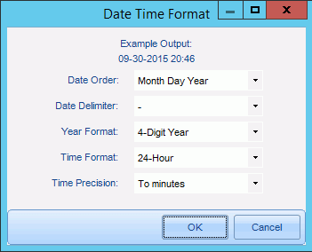

After completing Step 3: Define Database Fields, click the Step 4. Select Case Options tab.
In the Tagging Options group, select the needed tagging option:
-
Limit tags to document level: A reviewer will be able to tag documents but not individual pages of a multi-page document.
-
Limit tags to page level: A reviewer will be able to tag each page of a multi-page document. Note: Documents must be images for page tagging to be enabled (TIFF or JPG, not PDF).
-
Allow tagging at either document or page level: A reviewer can decide whether to tag a document or individual pages of a multi-page document.
This option governs which tabs appear in the Tags pane in Eclipse (Document Tags and/or Page Tags tabs).
|
|
Note: Most cases use only document tags. |

In the Date Format Options group:
-
Click Format Options.
-
Select the format for fields defined as Date and DateTime as shown in the following figure. This selection specifies how the date and time display in Eclipse.
-
Click OK.

Common date and time format choices, as well as time precision, are available. Time precision refers to the level of detail included, as shown in the following table. An example showing your choices displays at the top of the dialog box.